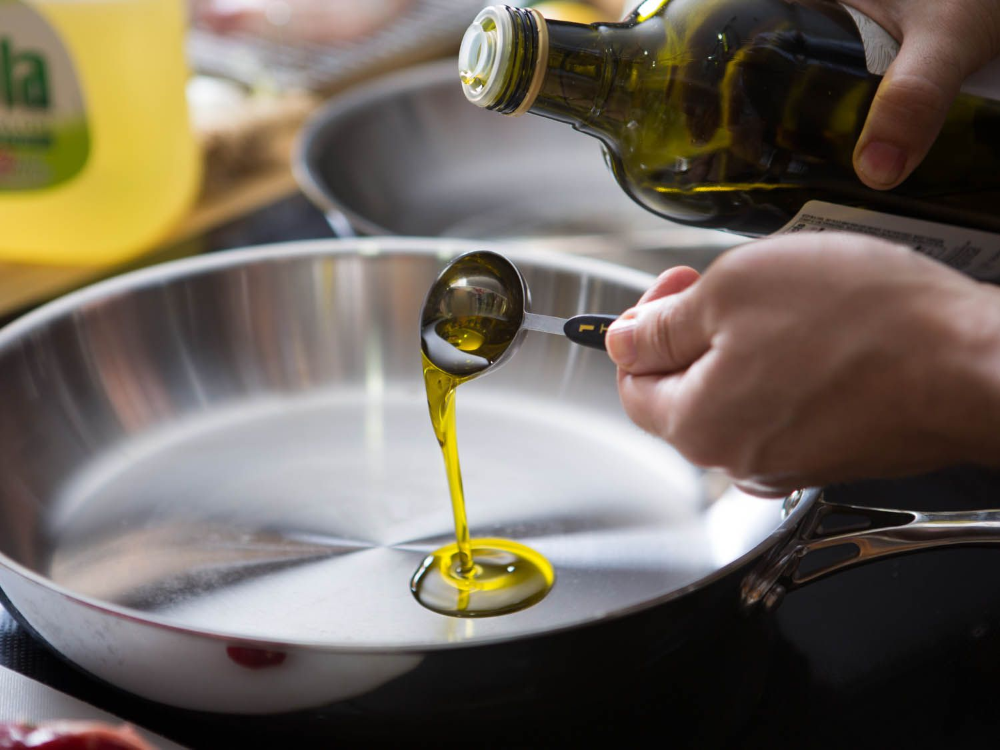

If you want to eat some spicy food you should make this. It is really easy to make. It is different from tteokbokki. The surface of rice cake skewer is crunchy, however the inside is nor crunchy. It has sauce on the surface of it.

Take a frying pan and put some onil on it and put amount of rice cake you want to it. Wait untill the slice cake gets crunchy.
Put 2 spoon of Ketchup,2spoon of Chili Pepper Paste,1 spoon of honey,some oil and some sesane and mix it together.

Put Slice Cake on the skewer. I would recommand 7 Slice Cake on one skewer.

Surrond the sauce around the slice cake.

Eat it